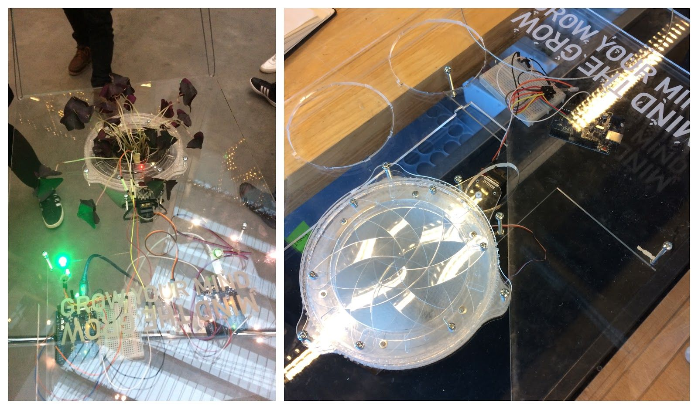

grow

Mind the grow was an conceptual design that was supposed to shed some light on our modern work environment through a digital design. I had two collaborators, which was Fremtidsfabrik and IDA. Their working environment was according to them very stressful and they needed some kind of purposeful mental break. They mentioned that nature and their office plants was the only thing that came close to this mental break. I became inspired by slow technology and designed a plant that would only let you give it water if you had a resting heartbeat.
I made an servo-driven iris opening that reacted to the stimuli from the employs heartrate. Besides this the plant was able to show if it needed water by LED-lights and a moisture sensor.

I made an servo-driven iris opening that reacted to the stimuli from the employs heartrate. Besides this the plant was able to show if it needed water by LED-lights and a moisture sensor.
